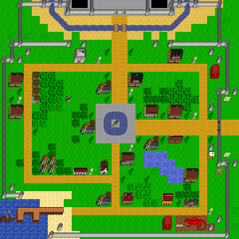

Nurnberg
Map Nurnberg, in region Nurnberg. Map level: 1.
Map view:

(click for larger view)
Exits from this map:
Exits to this map:
- Apartments
- Aqueduct
- Bank of Skud, Nurnberg Branch
- Bomb de Pon
- Castle Bauer Entrance
- Church
- Click de Pon
- Dick's House
- Dungeon of Death
- Dungeon of Life
- Flawless Beauty
- Guild of Black Shield, Main Floor
- Guild of Damned Heretics, Main Floor
- Guild of Dreaming Sage, Main Floor
- Guild of Drunken Barbarian, Main Floor
- Guild of Green Goblin, Main Floor
- Guild of Ketsueki Itsuryuu, Main Floor
- Guild of Laughing Skull, Main Floor
- Guild of Laughing Skull, Storage Room
- Guild of Law, Information Center of Regular Army
- Guild of Mailed Fist, Main Floor
- Guild of Mockers, Main Floor
- Guild of Nenshou Youso, Main Floor
- Guild of Poisoned Dagger, Main Floor
- Guild of Purple Butterfly, Main Floor
- Guild of Smoking Cauldron, Main Floor
- Guild of Zaseki Dzuki Ryoku, Main Floor
- Headquarter of the Regular Army
- Invulnerable
- Itteifuhen Apa-to
- Lone Town's Ye Olde Shoppe of Transport
- Maze
- Muramasa!
- Night Flower Bar
- Nurnberg Alchemy Shop
- Nurnberg Apartment, Main
- Nurnberg Hotel
- Nurnberg Imperial Post Office
- Nurnberg Storehouse
- Orcchop
- Port East
- Pup Land
- Pup Land Dragon Terminal
- Reception, Electricity Level 7
- Reception, Fire Level 7
- Reception, Office
- Reception, Wind Level 2
- Reception, Wind Level 6
- Reception, Wind Level 7
- ShowInv de Pon
- Sunspear
- Wand Shop
- White Dragon Scale
- Wolfsburg's Ye Olde Shoppe of Transport
No monster on this map.
Nurnberg's map index | Region index | Global map index | World map
{kind=link}